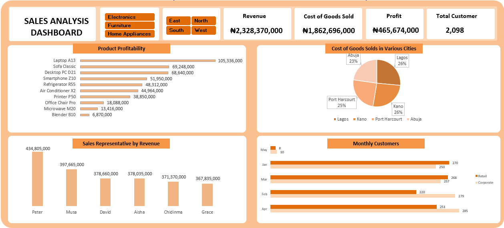
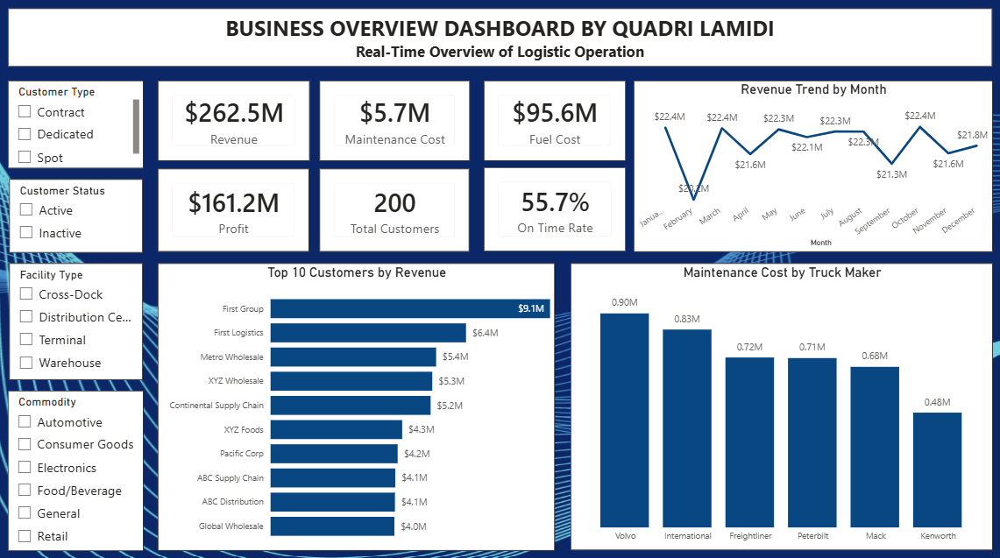

Intro
My name is Quadri Lamidi, and I'm a passionate data analyst with a background in geoscience. I work with SQL, Excel, and Power BI, building dashboards and extracting insights from raw datasets. Take a look at my projects to see it in action.
I'm based in Lagos, currently building on my analytics skills through hands-on training in SQL, Power BI, and GIS tools, and looking for a graduate trainee or entry-level analyst role where I can put them to use. I'd love to hear from you.
Excel Project

This is an Excel dashboard built from a sales dataset, using PivotTables to calculate core KPIs — Revenue, COGS, Profit, and Customer count. The dashboard visualizes profitability by product to identify top performers, revenue by sales rep to surface the strongest contributors, and COGS by city to highlight cost differences across regions.
It also tracks monthly customer trends to flag the weakest-performing month. Region and Category slicers let users filter the entire dashboard interactively, making it easy to drill into specific segments without rebuilding any charts.
Logistics Dashboard

This is a four-page Power BI dashboard built on a trucking and freight dataset, created as my capstone project for my TS Academy analytics certification. It covers driver performance, route profitability, fleet utilization, fuel efficiency, and safety metrics — pulling data across multiple related tables and using custom DAX measures to surface the metrics that actually matter to a logistics operation.
The goal was to give a fleet manager a single view to spot underperforming routes, flag safety risks, and track fuel costs without digging through raw spreadsheets.
About
I'm a geoscientist by training and a data analyst by choice — though the longer I worked with geophysical data, the more it felt like the same job: take in messy information, find what's actually true in it, and explain it clearly to someone who needs to act on it.
I studied Applied Geophysics at the University of Ilorin, where most of my coursework involved interpreting subsurface data — seismic readings and interpretation, well logs, and similar datasets — to understand what's happening beneath the surface.
I completed my NYSC service year at Eko Electricity Distribution Company (EKEDP), where I worked across two units under Technical Services department. In Operation Technology, EKEDC's GIS unit, I mapped company assets using ArcGIS Enterprise and the FieldMap app, and worked on modifying the underlying asset database. In the Project unit, I supervised ongoing company's projects and reported their status to stakeholders and management, mostly using Excel and Power BI.
Since then, I've kept building. I completed a beginner-to-intermediate data analytics course with TS Academy covering Excel, Power BI, and SQL, with an introduction to Python. I'm also currently working toward Microsoft's PL-900 certification.
My core toolkit today is SQL, Excel, and Power BI for analysis and dashboards, as well as GIS tools like ArcGIS for spatial work — a natural extension of my geoscience background. I'm based in Lagos, and I'm looking for a graduate trainee or entry-level data analyst role where I can keep learning while contributing from day one.
Contact